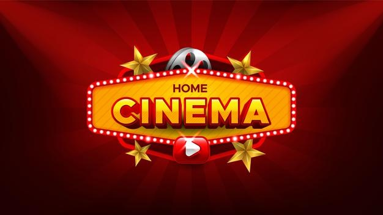
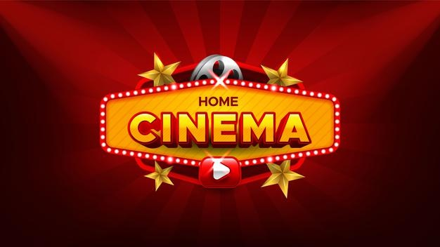
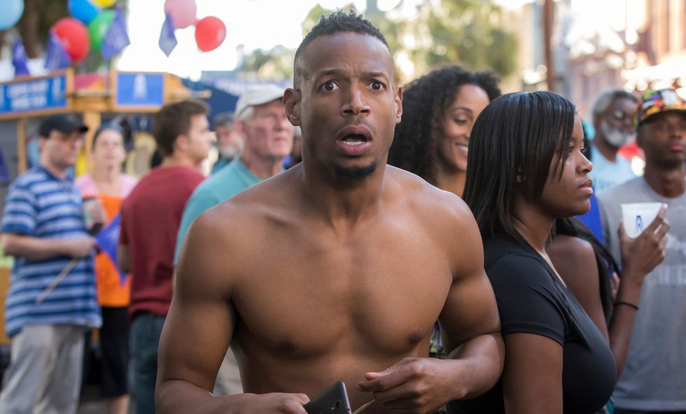
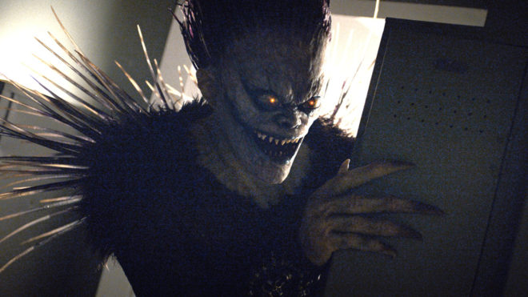

Top 5 de las peores peliculas de netflix
Desde su lanzamiento, Netflix se ha convertido en una de las plataformas de streaming por Internet más famosas del mundo, lo cuál los ha llevado a experimentar con producciones propias de series y películas que se estrenan en exclusiva en su página, generando más valor de marca para sus ya fieles fans en todo el mundo.Sin embargo, no todo siempre resulta como quisieran, ya que llevar a cabo una idea original o una adaptación a la realidad implica un gran conocimiento de su público objetivo. Una investigación fallida o un guión mal escrito puede provocar desastres en las críticas a pesar de tener una cara conocida en la portada.
Numero 5 Bright (David Ayer, 2017)

¿te acuerdas cuando Netflix quería que 'Bright' fuese el inicio de una exitosa saga con su mundo fantástico propio? ¿No? Tampoco te culpamos. David Ayer, que ya había tenido una experiencia desastrosa con 'Escuadrón Suicida', volvió a demostrar que quizás esta profesión no es la suya. Con Will Smith y Joel Edgerton como protagonistas, la película ambicionaba ser una 'buddy movie' en un mundo alternativo donde los seres humanos conviven con criaturas mágicas como orcos, elfos y hadas. Tras su nefasta recepción, las conversaciones sobre una secuela quedaron muertas y enterradas. No, no la contaremos entre las mejores películas de Will Smith. |
|
Numero 4 The RIdiculous 6 (Frank Coraci, 2015)
 Desde luego no se le puede acusar a esta película de hacer publicidad engañosa: ridícula era un rato. Imagina tener un reparto con los divertidísimos Adam Sandler, Terry Crews, Jorge García, Taylor Lautner, Rob Schneider, Luke Wilson, Steve Buscemi, Danny Trejo, Nick Nolte... y no hacer ni un mínimo de gracia. Ouch. Este intento de parodia del Lejano Oeste haría llorar a los mejores westerns de la historia del cine.
Desde luego no se le puede acusar a esta película de hacer publicidad engañosa: ridícula era un rato. Imagina tener un reparto con los divertidísimos Adam Sandler, Terry Crews, Jorge García, Taylor Lautner, Rob Schneider, Luke Wilson, Steve Buscemi, Danny Trejo, Nick Nolte... y no hacer ni un mínimo de gracia. Ouch. Este intento de parodia del Lejano Oeste haría llorar a los mejores westerns de la historia del cine. |
Numero 3 365 días (Barbara Bialowas y Tomasz Mandes, 2020)
 Hay películas malas, y hay películas directamente ofensivas. En nuestra crítica de '365 días' lo dejábamos claro: "una mediocridad tóxica tan insultantemente machista que hace que las novelas de E.L. James parezcan secuelas de 'Mujercitas'". La cineasta Barbara Bialowas estuvo en boca de todos con esta historia de un mafioso que secuestra a una mujer y le da 365 días para que se enamore de él. Todo el argumento es tan problemático como su representación de la violencia y el sexo como algo idealizado. Por favor, hazte un favor y evítala.
Hay películas malas, y hay películas directamente ofensivas. En nuestra crítica de '365 días' lo dejábamos claro: "una mediocridad tóxica tan insultantemente machista que hace que las novelas de E.L. James parezcan secuelas de 'Mujercitas'". La cineasta Barbara Bialowas estuvo en boca de todos con esta historia de un mafioso que secuestra a una mujer y le da 365 días para que se enamore de él. Todo el argumento es tan problemático como su representación de la violencia y el sexo como algo idealizado. Por favor, hazte un favor y evítala.
Numero 2 Desnudo (Naked) (Michael Tiddes, 2017)

Una broma corta puede ser divertida. Esa misma broma alargada durante una hora y media es una tortura. Y eso se aplica a esta película de Michael Tiddes, que se mira en 'Atrapado en el tiempo' y todo lo que le sale es una película mediocre, anticuada y poco divertida. La historia sigue a un tipo (Marlon Wayans) que está a punto de casarse, pero que entra en un bucle temporal en el que se despierta una y otra vez desnudo en el ascensor del hotel.
Numero 1 Death Note (Adam Wingard, 2017)

Quizás la gran ofensa de esta película no sea tanto ser mala (que lo es), sino no haber podido rozar siquiera las grandezas de su referente. La serie de anime 'Death Note' planea por encima de este desastre anunciado como un Shinigami que disfruta viendo las miserias del mundo humano. Adam Wingard desperdicia esta oportunidad con un Natt Wolff que no canaliza la energía megalómana de Kira y un Lakeith Stanfield que hace lo que puede como el icónico L.